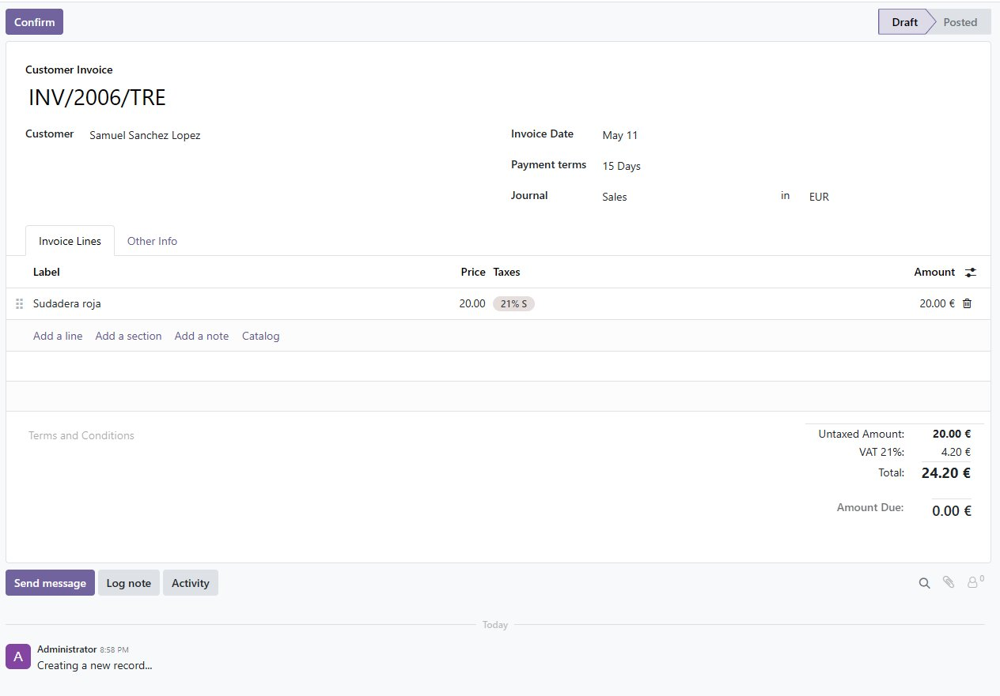
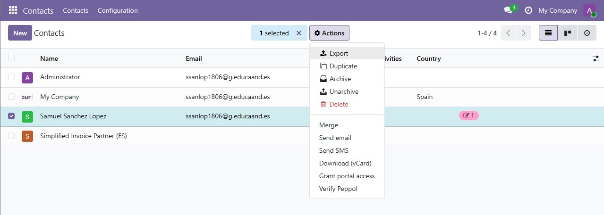
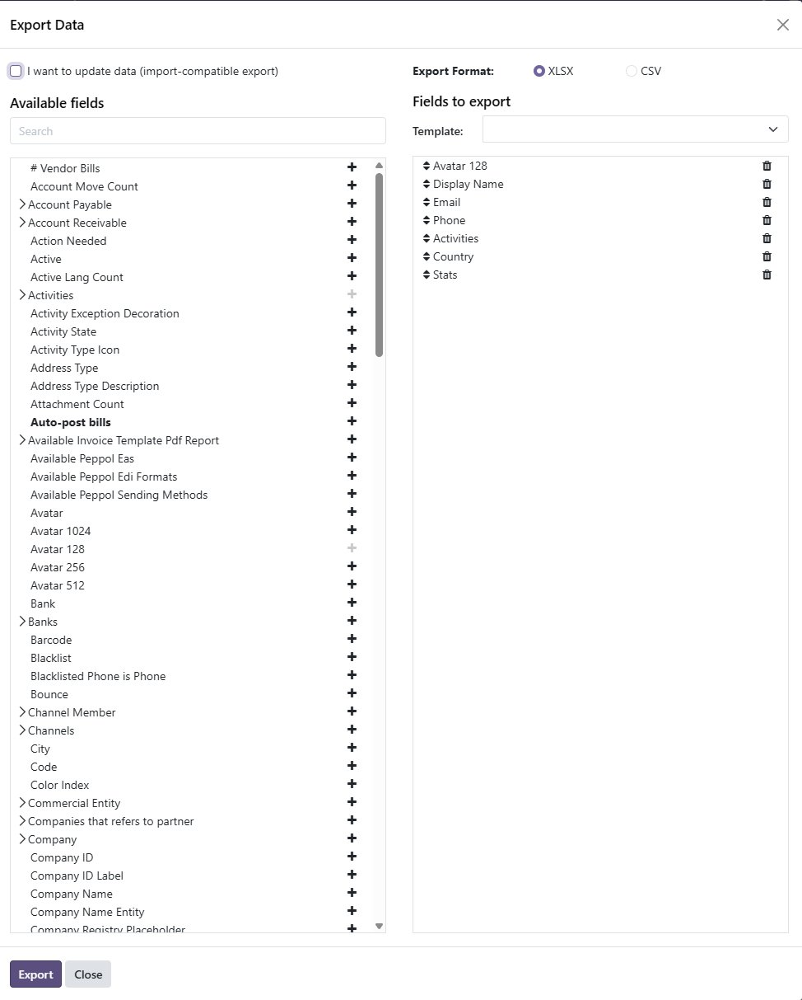

Informes y exportación
Odoo permite generar informes desde casi cualquier módulo, y también exportar la información a otros formatos. Los informes pueden ser documentos en PDF (facturas, albaranes, presupuestos) o vistas interactivas dentro del propio programa.
Informes en PDF
Desde cualquier documento (por ejemplo, una factura) hay un botón Imprimir que genera el PDF con los datos de la empresa y del cliente. El diseño del PDF se puede cambiar desde Ajustes → Empresas → Configurar diseño del documento, eligiendo plantilla, colores y logo.

Vistas Pivot y Gráfico
En la mayoría de listados hay un icono para cambiar la vista a Pivot o Gráfico. Sirve para hacer análisis rápidos sin instalar nada extra: total facturado por vendedor, ventas por producto, evolución mensual, etc.
Exportar datos
Cualquier listado de Odoo se puede exportar siguiendo siempre los mismos pasos:
- Ir al listado (por ejemplo, Contactos).
- Seleccionar los registros marcando la casilla de la cabecera.
- Pulsar en Acciones → Exportar.
- Elegir los campos a incluir.
- Seleccionar el formato: CSV o XLSX.
- Pulsar Exportar y guardar el archivo.


Si se marca la opción "Quiero actualizar datos (importación-compatible)", el archivo que se descarga sirve también para importar los registros más tarde, porque incluye los identificadores externos.
Otras formas de extraer información
- API XML-RPC / JSON-RPC: permite conectar otros programas a Odoo.
- Acceso directo a PostgreSQL: consultar la base de datos con SQL (solo lectura).